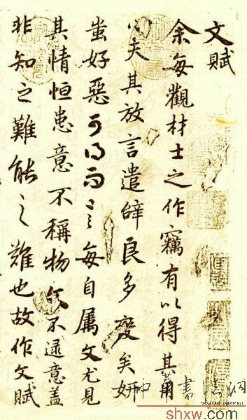
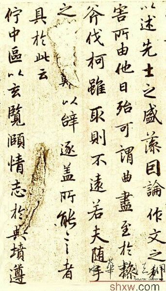

陆机《文赋》原文：
 余每观才士之所作，窃有以得其用心。夫放言遣辞，良多变矣，妍yán蚩chī好恶，可得而言。每自属文，尤见其情，恒患意不称物，文不逮意，盖非知之难，能之难也。故作文赋，以述先士之盛藻，因论作文之利害所由，佗tuō日殆可谓曲尽其妙。至於操斧伐柯，虽取则不远，若夫随手之变，良难以辞逮，盖所能言者，具於此云。
伫中区以玄览，颐情志於典坟。遵
其始也，皆收视反听，耽思傍讯，精骛八极，心游万仞。其致也，情曈昽而弥鲜，物昭晣而互进。倾群言之沥液，漱六艺之芳润。浮天渊以安流，濯下泉而潜浸。於是沈辞怫悦，若游鱼衔钩，而出重渊之深；浮藻联翩，若翰鸟缨缴，而坠曾云之峻。收百世之阙文，采千载之遗韵。谢朝华於已披，启夕秀於未振。观古今於须臾，抚四海於一瞬。
然后选义按部，考辞就班。抱暑者咸叩，怀响者毕弹。或因枝以振叶，或沿波而讨源。或本隐以之显，或求易而得难。或虎变而兽扰，或龙见而鸟澜。或妥帖而易施，或岨峿qū yǔ 而不安。罄澄心以凝思，眇众虑
伊兹事之可乐，固圣贤之所钦。课虚无以责有，叩寂寞而求音。函绵邈於尺素，吐滂沛乎寸心。言恢之而弥广，思按之而逾深。播芳蕤ruí之馥馥，发青条之森森。粲风飞
体有万殊，物无一量。纷纭挥霍，形难为状。辞程才以效伎，意司契而为匠。在有无而黾mǐn勉，当浅深而不让。虽离方而遯dùn员，期穷形而尽相。故夫夸目者尚奢，惬心者贵当。言穷者无隘，论达者唯旷。
诗缘情而绮靡，赋体物而浏亮。碑披文以相质，诔缠绵而凄怆。铭博约而温润，箴顿挫而清壮。颂优游以彬蔚，论精微而朗畅。奏平彻以闲雅，说炜晔yè而谲jué诳。虽
其为物也多姿，其为体也屡迁。其会意也尚巧，其遣言也贵妍。暨音声之迭代，若五色之相宣。虽逝止之无常，固崎锜qíqí而难便。苟达变而识次，犹开流以纳泉。如失机而后会，恒操末以续颠。谬玄黄之袟Zhi叙，故淟涊tiǎn niǎn 而不鲜。
或仰逼於先条，或俯侵於后章。或辞害而理比，或言顺而义妨。离之则双美，合之则两伤。考殿最於锱铢，定
或藻思绮合，清丽千眠。炳若缛绣，凄若繁弦。必所拟之不殊，乃暗合乎曩篇。虽杼轴於予怀，怵佗人之我先。苟伤廉而愆义，亦虽爱而必捐。
或苕sháo发颖竖，离众绝致。形不可逐，响难为系。块孤立而特峙，
或讬言於短韵，对穷迹而孤兴。俯寂寞而无友，仰寥廓而莫承。譬偏弦之独张，含清唱而靡应。或寄辞於瘁音，徒靡言而弗华。混妍蚩而成体，累良质而为瑕。象下管之偏疾，故虽应而不和。或遗理以存异，徒寻虚以逐微。言寡情
若夫丰约之裁，俯仰之形。因宜适变，曲有微情。或言拙而喻巧，或理朴而辞轻。或袭故而弥新，或沿浊而更清。或览之而
普辞条与文律，良余膺之所服。练世情之常尤，识前修之所淑。虽浚发於巧心，或受欠於拙目。彼琼敷与玉藻，若中原之有菽。同橐tuó龠yuè之罔穷，与天地乎并育。虽纷蔼於此世，嗟不盈於予掬。患挈瓶之屡空，病昌言之难属。故踸chěn
若夫应感之会，通塞之纪。来不可遏，去不可止。藏若景灭，行犹响起。方天机之骏利，夫何纷而不理。思风发於胸臆，言泉流於唇齿。纷威蕤以馺sà鹓yuān，唯毫素之所拟。文徽徽以溢目，音泠泠而盈耳。及其六情底滞，志往神留。兀若枯木，豁若涸流。揽营魂以探赜zé，顿精爽於自求。理翳翳而愈伏，思乙乙其
伊兹文之为用，固众理之所因。恢万里而无阂，通亿载而为津。俯贻则於来叶，仰观象乎古人。济文武於将坠，宣风声於不泯。涂无远而不弥，理无微而弗纶。配霑润於云雨，象变化乎鬼神。被金石而德广，流管弦而日新。
余每观才士之所作，窃有以得其用心。夫放言遣辞，良多变矣，妍蚩好恶，可得而言。每自属文，尤见其情，恒患意不称物，文不逮意，盖非知之难，能之难也。故作文赋，以述先士之盛藻，因论作文之利害所由，佗日殆可谓曲尽其妙。至於操斧伐柯，虽取则不远，若夫随手之变，良难以辞逮，盖所能言者，具於此云。
伫中区以玄览，颐情志於典坟。遵四时以叹逝，瞻万物而思纷。悲落叶於劲秋，喜柔条於芳春，心懔懔以怀霜，志眇眇而临云。咏世德之骏烈，诵先人之清芬。游文章之林府，嘉丽藻之彬彬。慨投篇而援笔，聊宣之乎斯文。
其始也，皆收视反听，耽思傍讯，精骛八极，心游万仞。其致也，情曈昽而弥鲜，物昭晣而互进。倾群言之沥液，漱六艺之芳润。浮天渊以安流，濯下泉而潜浸。於是沈辞怫悦，若游鱼衔钩，而出重渊之深；浮藻联翩，若翰鸟缨缴，而坠曾云之峻。收百世之阙文，采千载之遗韵。谢朝华於已披，启夕秀於未振。观古今於须臾，抚四海於一瞬。
然后选义按部，考辞就班。抱暑者咸叩，怀响者毕弹。或因枝以振叶，或沿波而讨源。或本隐以之显，或求易而得难。或虎变而兽扰，或龙见而鸟澜。或妥帖而易施，或岨峿而不安。罄澄心以凝思，眇众虑而为言。笼天地於形内，挫万物於笔端。始踯躅於燥吻，终流离於濡翰。理扶质以立干，文垂条而结繁。信情貌之不差，故每变而在颜。思涉乐其必笑，方言哀而已叹。或操觚以率尔，或含毫而邈然。
伊兹事之可乐，固圣贤之所钦。课虚无以责有，叩寂寞而求音。函绵邈於尺素，吐滂沛乎寸心。言恢之而弥广，思按之而逾深。播芳蕤之馥馥，发青条之森森。粲风飞而猋竖，郁云起乎翰林。
体有万殊，物无一量。纷纭挥霍，形难为状。辞程才以效伎，意司契而为匠。在有无而黾勉，当浅深而不让。虽离方而遯员，期穷形而尽相。故夫夸目者尚奢，惬心者贵当。言穷者无隘，论达者唯旷。
诗缘情而绮靡，赋体物而浏亮。碑披文以相质，诔缠绵而凄怆。铭博约而温润，箴顿挫而清壮。颂优游以彬蔚，论精微而朗畅。奏平彻以闲雅，说炜晔而谲诳。虽区分之在兹，亦禁邪而制放。要辞达而理举，故无取乎冗长。
其为物也多姿，其为体也屡迁。其会意也尚巧，其遣言也贵妍。暨音声之迭代，若五色之相宣。虽逝止之无常，固崎锜而难便。苟达变而识次，犹开流以纳泉。如失机而后会，恒操末以续颠。谬玄黄之袟叙，故淟涊而不鲜。
或仰逼於先条，或俯侵於后章。或辞害而理比，或言顺而义妨。离之则双美，合之则两伤。考殿最於锱铢，定去留於毫芒。苟铨衡之所裁，固应绳其必当。或文繁理富，而意不指适。极无两致，尽不可益。立片言而居要，乃一篇之警策。虽众辞之有条，必待兹而效绩。亮功多而累寡，故取足而不易。
或藻思绮合，清丽千眠。炳若缛绣，凄若繁弦。必所拟之不殊，乃暗合乎曩篇。虽杼轴於予怀，怵佗人之我先。苟伤廉而愆义，亦虽爱而必捐。
或苕发颖竖，离众绝致。形不可逐，响难为系。块孤立而特峙，非常音之所纬。心牢落而无偶，意徘徊而不能揥。石韫玉而山辉，水怀珠而川媚。彼榛楛之勿翦，亦蒙荣於集翠。缀下里於白雪，吾亦济夫所伟。
或讬言於短韵，对穷迹而孤兴。俯寂寞而无友，仰寥廓而莫承。譬偏弦之独张，含清唱而靡应。或寄辞於瘁音，徒靡言而弗华。混妍蚩而成体，累良质而为瑕。象下管之偏疾，故虽应而不和。或遗理以存异，徒寻虚以逐微。言寡情而鲜爱，辞浮漂而不归。犹弦么而徽急，故虽和而不悲。或奔放以谐合，务嘈囋而妖冶。徒悦目而偶俗，固高声而曲下。寤防露与桑间，又虽悲而不雅。或清虚以婉约，每除烦而去滥。阙大羹之遗味，同朱弦之清汜。虽一唱而三叹，固既雅而不艳。
若夫丰约之裁，俯仰之形。因宜适变，曲有微情。或言拙而喻巧，或理朴而辞轻。或袭故而弥新，或沿浊而更清。或览之而必察，或研之而后精。譬犹舞者赴节以投袂，歌者应弦而遣声。是盖轮扁所不得言，故亦非华说之所能精。
普辞条与文律，良余膺之所服。练世情之常尤，识前修之所淑。虽浚发於巧心，或受欠於拙目。彼琼敷与玉藻，若中原之有菽。同橐龠之罔穷，与天地乎并育。虽纷蔼於此世，嗟不盈於予掬。患挈瓶之屡空，病昌言之难属。故踸踔於短垣，放庸音以足曲。恒遗恨以终篇，岂怀盈而自足。惧蒙尘於叩缶，顾取笑乎鸣玉。
若夫应感之会，通塞之纪。来不可遏，去不可止。藏若景灭，行犹响起。方天机之骏利，夫何纷而不理。思风发於胸臆，言泉流於唇齿。纷威蕤以馺鹓，唯毫素之所拟。文徽徽以溢目，音泠泠而盈耳。及其六情底滞，志往神留。兀若枯木，豁若涸流。揽营魂以探赜，顿精爽於自求。理翳翳而愈伏，思乙乙其若抽。是以或竭情而多悔，或率意而寡尤。虽兹物之在我，非余力之所戮。故时抚空怀而自惋，吾未识夫开塞之所由。
伊兹文之为用，固众理之所因。恢万里而无阂，通亿载而为津。俯贻则於来叶，仰观象乎古人。济文武於将坠，宣风声於不泯。涂无远而不弥，理无微而弗纶。配霑润於云雨，象变化乎鬼神。被金石而德广，流管弦而日新。
《陆柬之书文赋》，唐陆柬之书，行书。现藏台北故宫博物院。
陆柬之，生卒年不详，约初唐太宗、高宗时人，为虞世南的外甥，苏州吴县人，曾官至朝散大夫、太子司议郎。少时学书量从虞世南，后乃上溯魏晋而专攻王羲之，朱长文《墨池编》谓：“柬之以书专家，与欧、褚齐名，隶行入妙，草入能，隶行於今骀绝遗迹，尝观其草书，意古笔老，信乎名不虚得也。”其行书虽出于虞世南，而风气过之，笔法飘纵，妍媚动人，大有“晚擅出蓝之誉”（见《书史会要》）。柬之所书《头陀贴》中载二十五字刻本。
我们看陆书《文赋》墨迹，亦如陆机《文赋》论文所称“笼天地于形内,挫万物于笔端”，“播芳蕤之馥馥，发青条之森森”，有逸气，逸笔，直追“二王。
《文赋》为纸本墨迹卷，是初唐时期少有的几部名家真迹之一。这是一幅陆柬之用心写的作品，因为《文赋》是陆机呕心沥血的代表作，而陆柬之又是陆机的后裔，所以陆柬之是以极其崇敬的心情来写《文赋》的。据说陆柬之年轻时读陆机《文赋》，极为倾心，想亲笔书写一篇，因怕自己书艺不精而“玷辱”前贤名作，始终未敢贸然动笔，直至他晚年书名赫赫时，才动笔了此宿愿。
《文赋》墨迹的章法和气韵，更多的是学习王羲之的。全书 144行，1658字 ，字体以正、行为主，间参草字，虽三体并用，但上下照应，左右顾盼，配合默契，浑然天成。笔致圆润而少露锋芒，表现出平和简静的意境。笔法飘纵，无滞无碍，超逸神俊，深得晋人韵味，从中透露出深厚的《兰亭》根底。
元代书法家揭溪斯曾评论此帖说：“右陆柬之之行书《文赋》一卷，唐人法书结体遒劲有晋人风格者，惟见此卷耳。虽若隋僧智永，犹恨妩媚太多、齐整太过也。独于此卷为之三叹。”元赵孟頫fǔ评价更高，曰：“右唐陆柬之行书文赋真迹，唐初善书者称欧虞褚薛，以书法论之，岂在四子下耶。然世罕有其迹，故知之者希耳” （赵孟頫《文赋》跋）。赵孟頫曾临学此帖，从中领悟晋人笔法和结体，受益非浅。孙承泽在给《文赋》墨迹所写的跋文上说：“赵文敏（孟頫）晚年书法全从此（指《文赋》）得力，人鲜见司谏（指陆柬之）书，遂不知文敏所自来耳” 。
此卷流传有绪，有赵孟頫、李倜tì、揭傒斯、危素、宋濂、孙承泽等人跋记。帖中“渊”、“世”等字均作缺笔，盖避唐代帝王名讳之故。帖后无余纸，名款己失，卷前引首有明代李东阳篆题“二陆文翰”，及沈度隶书“陆机文赋陆柬之书”，真迹清时入内府，后藏北京故宫博物院，此卷素笺本，现藏台北故宫博物院。